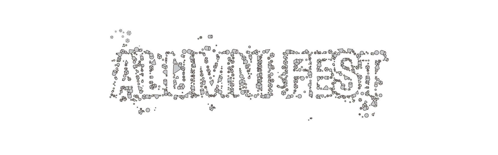

ALUMNI FEST 에
여러분들을 초대합니다
안녕하세요. 청주대학교 시각디자인학과 제46회 졸업전시 위원장 안혜원입니다.
선선한 바람과 함께 계절이 깊어지는 11월, 청주대학교 시각디자인학과 학생들이
지난 시간 동안 쌓아온 고민과 탐구의 결과를 선보이는 제46회 졸업전시회를 개최합니다.
이번 졸업전시회의 주제어 '경계주의'는 인공지능이 창작과 지적활동에 깊게 관여하는 오늘날,
우리는 이미지와 언어, 기술과 물성, 개인과 사회의 경계가 흐려진 시대를 마주하는 데서 출발합니다.
'경계주의'는 급변하는 시대의 미세한 경계에 주목하며 그것을 시각언어로 해석하고자 했던
‘실천적 디자인활동’을 의미합니다. 우리의 전시는 만들고, 수정하고, 통과하고, 경험하며
빚어가는 제작 전반의 과정을 통해 각자가 마주한 경계를 다시 한 번 고민하고 확인할 수 있는
긴 여정의 결과로 풀어내고자 했습니다. 경계가 만들어내는 관계와 의미를 탐구하는
과정 속에서 학생 개개인의 생각과 시선이 각자의 작업으로 완성되었습니다.
오는 11월 14일(토), 청주대학교 공군학군단 콘서트홀에서 진행되는
얼럼나이 행사에 학과의 시간을 함께 이어오신 선배님들을 초대합니다.
서로 다른 자리에서 이어져 온 시간들이 다시 만나는 자리에서,
올해의 졸업전시 ‘경계주의’가 담아낸 이야기와 새로운 시작을 함께 나누고자 합니다.
선배님들과 관람객 여러분의 소중한 걸음으로 함께해 주시면 감사하겠습니다.
아직 서툴고 부족한 점이 많지만, 이번 전시는 저희에게 새로운 출발점이 되었습니다.
지나온 배움의 시간을 돌아보고, 앞으로 나아갈 방향을 생각해 보는 소중한 계기이기도 했습니다.
서로 다른 생각과 표현이 모인 이 자리가 완성된 답을 보여주는 곳이라기보다
앞으로의 가능성을 함께 바라보는 자리가 되기를 바랍니다.
한국공예관 3층 갤러리 3관, 5관
10:00 - 12:00
공군학군단 콘서트홀
- 인사말
- 교수님 소개및 축사 차기&현 졸업전시위원회 부장 소개
- 제46회 졸업전시회 경계주의 프리뷰
- 졸업생 강연 및 질의응답
- 전시회 자유 관람
- 레크레이션 (졸업생에게 질문, 역대 학과 퀴즈)
- 베스트 드레서 선정
- 경품 추첨
- 진행시간 : 18:00~
- 장소 : 충북 청주시 청원구 충청대로 76 1층,
명륜진사갈비 율량내덕점